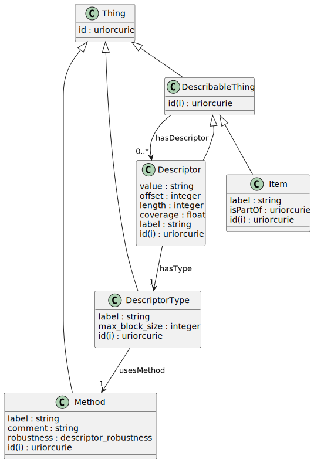

Crystalia Data Model
Schema Name: crystalia-datamodel
URI: https://w3id.org/crystalia
Data model for the Crystalia dataset annotation model
The diagram below illustrates the class inheritance structure and the relationships between the classes within the schema.

The diagram below illustrates the entity relationship diagram for the schema without the inheritance structure.
@from_file:erd.mermaid
Classes
| Class | Description |
|---|---|
| DescribableThing | An item that can be described by one or more descriptors. Could be an item(file) or another descriptor |
| Descriptor | A descriptor for the whole or part of an item or another descriptor |
| DescriptorType | Details about a descriptor type |
| Item | An individual item for example a file |
| Method | A method used to generate a descriptor |
| Thing | Anything that has an id |
Slots
| Slot | Description |
|---|---|
| comment | A description of the item |
| coverage | The coverage of the descriptor (0 |
| hasDescriptor | The descriptors associated with an item |
| hasType | The type of the descriptor |
| id | A unique identifier |
| isPartOf | The items in the dataset such as files |
| label | A human-readable label for the item, most often the filename |
| length | The length of the data described by the descriptor |
| max_block_size | The maximum size of the block of data described by the descriptor |
| offset | The starting offset for partial file descriptors |
| robustness | The robustness category of the descriptor type |
| usesMethod | The method used to generate the descriptor |
| value | The value of the descriptor |
Enumerations
| Enumeration | Description |
|---|---|
| DescriptorRobustness | Degree of resilience of the descriptor to changes in the item |
Types
| Type | Description |
|---|---|
| Boolean | A binary (true or false) value |
| Curie | a compact URI |
| Date | a date (year, month and day) in an idealized calendar |
| DateOrDatetime | Either a date or a datetime |
| Datetime | The combination of a date and time |
| Decimal | A real number with arbitrary precision that conforms to the xsd:decimal speci... |
| Double | A real number that conforms to the xsd:double specification |
| Float | A real number that conforms to the xsd:float specification |
| Integer | An integer |
| Jsonpath | A string encoding a JSON Path |
| Jsonpointer | A string encoding a JSON Pointer |
| Ncname | Prefix part of CURIE |
| Nodeidentifier | A URI, CURIE or BNODE that represents a node in a model |
| Objectidentifier | A URI or CURIE that represents an object in the model |
| Sparqlpath | A string encoding a SPARQL Property Path |
| String | A character string |
| Time | A time object represents a (local) time of day, independent of any particular... |
| Uri | a complete URI |
| Uriorcurie | a URI or a CURIE |
Subsets
| Subset | Description |
|---|---|